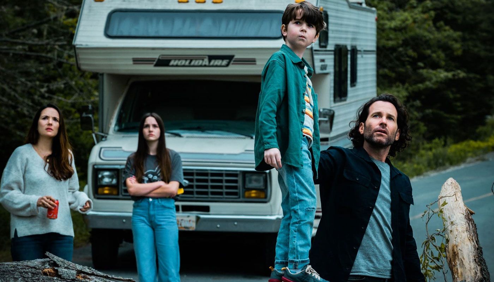
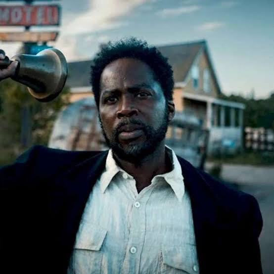
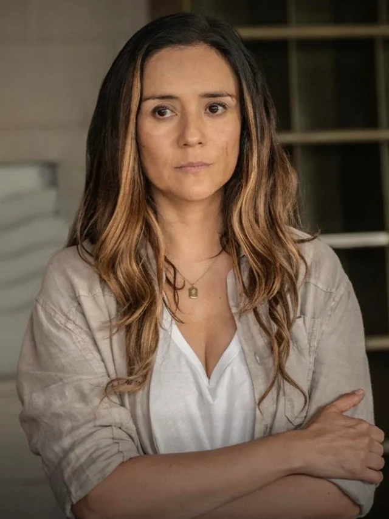
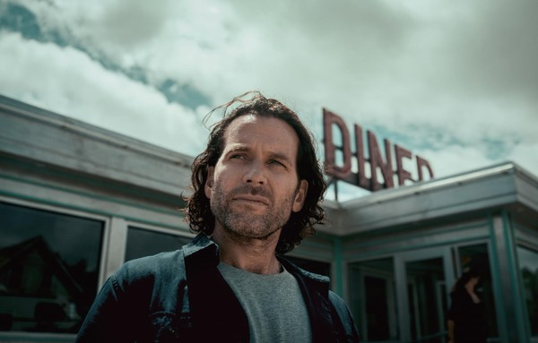

Bem-vindo à Cidade
Ninguém entra. Ninguém sai.
E quando a noite cai... eles vêm.
Sinopse

Durante uma viagem de trailer pelos Estados Unidos, a família Matthews se perde e acaba entrando em uma pequena cidade do interior. O que parecia um simples desvio se transforma em um pesadelo: ninguém consegue sair da cidade.
À noite, criaturas monstruosas saem das florestas e atacam qualquer um que esteja desprotegido. Liderados pelo xerife Boyd Stevens, os moradores tentam sobreviver enquanto buscam respostas sobre a origem daquele lugar amaldiçoado.
Criada por John Griffin e produzida pelos irmãos Russo, a série mistura terror, mistério e drama de forma viciante.
Personagens Principais

Boyd Stevens
Harold Perrineau — Xerife da cidade e líder dos sobreviventes.

Tabitha Matthews
Catalina Sandino Moreno — Mãe determinada que busca respostas.

Jim Matthews
Eion Bailey — Pai da família Matthews.
* As imagens acima usam o pôster oficial da série. Para fotos individuais dos atores,
baixe imagens promocionais oficiais e coloque na pasta img/.